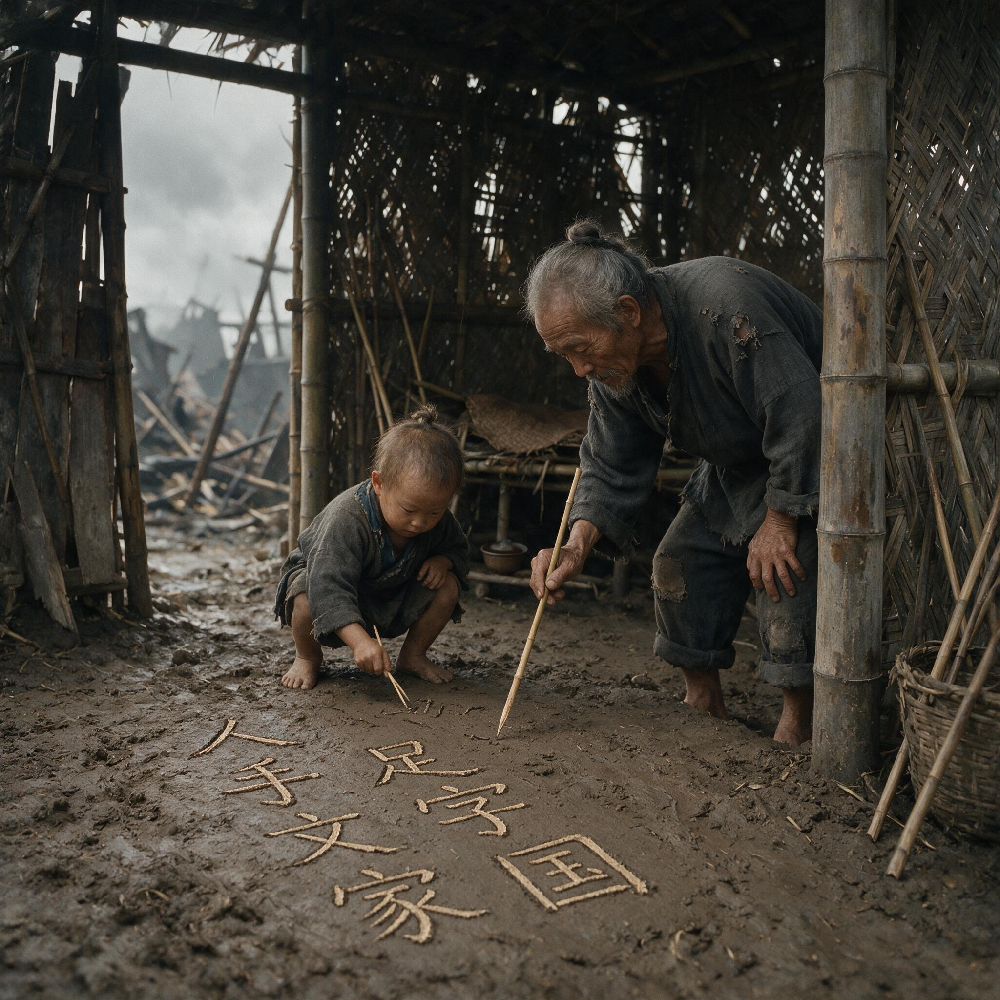

第 25 章
胜利叙事的分娩阵痛
芒友会师的两张照片在同一天拍摄，相隔不到三个小时。第一张摄于上午十点，中国驻印军新一军先头部队与滇西远征军第五十三军在芒友镇外的三岔路口相遇，两支部队的士兵在泥泞中握手，背景里是一辆被击毁的日军九五式轻型坦克和几棵被炮火削断的桉树。
第二张摄于下午一点，同样的两支部队的指挥官在镇内一座半塌的缅寺前正式会面，身后站着排列整齐的卫兵，寺门上方临时悬挂的青天白日旗在微风中展开。这两张照片后来都出现在重庆的报纸上，但被反复翻印、放大、裁剪并配以各种标题的，只有第二张。第一张照片在发表过一次之后就被收进了档案柜，此后几十年间很少有人再看到它。

用竹片在泥地教孩子认字
AI 生成插图，非史实影像。
区别在于细节。第一张照片里，士兵们的军服颜色不一致——驻印军穿的是英式卡其布制服，颜色偏黄绿；滇西远征军穿的是重庆补给的美式制服，颜色偏灰绿。这种色差在黑白照片中呈现为深浅不同的灰度，视觉上显得杂乱。而更关键的是，这次会师标志着中国远征军完成了中国战略大反攻的全面胜利——第二次入缅作战，中国驻印军伤亡1.8万余人，歼灭日军4.8万余人，收复缅甸土地约13万平方公里；滇西中国远征军伤亡67,403人，歼灭日军21,057人，光复滇西全部土地约3.8万平方公里。
更关键的是画面右侧边缘处，可以看见一个临时搭建的帆布帐篷，帐篷外停放着一排担架，担架上躺着的人被军毯覆盖。那是尚未撤下前线的伤兵转运站。会师时刻，伤兵转运仍在进行。第二张照片选取了不同的角度，缅寺的墙壁挡住了转运站，军服色差在整齐的队列中被弱化，画面的焦点集中在两位指挥官握手的姿态上——他们的手在照片正中央形成了一个对称的支点。
这个支点后来成为整个胜利叙事的视觉核心。从1945年2月开始，“会师”这个词在重庆的官方文告和报纸社论中反复出现，几乎每一次都配以第二张照片或它的翻印版本。照片被裁剪成不同的尺寸以适应版面，有时只保留握手的手部特写，有时扩大到包含两位指挥官的半身像。
但无论怎样裁剪，缅寺、旗帜和整齐的队列这三个元素始终被保留。它们构成了一个稳定的视觉公式：宗教场所暗示着某种超越性的见证，旗帜确认了国家在场的合法性，队列则证明了军队的纪律与秩序。
这个公式在此后几个月内被不断复制——不是通过拍摄新的照片，而是通过对同一张底片的反复使用和重新构图。这种复制本身就是一个生产过程。每一版印刷、每一次裁剪、每一个配图的标题，都在强化一种特定的解读方向：两支远征军的会师被呈现为中国军队在缅甸战场完成使命的象征性时刻，一个圆满的句号。
但句号的位置是经过选择的。在芒友会师之前，驻印军已经在新维、腊戌一带与日军进行了持续数周的激战；在会师之后，滇西远征军的部分部队仍在芒市至遮放一线清剿残余日军据点。会师不是一个军事行动的终点，而是一个被从连续的作战时间线中抽取出来、赋予特殊意义的节点。选择这个节点作为“胜利”的标志，意味着其他节点将被置于次要位置。
1945年1月28日，也就是芒友会师的第二天，重庆《中央日报》在头版刊登了会师的消息，标题是《我驻印军与滇西远征军昨在芒友会师》。同一天，《大公报》的标题是《两路大军会师芒友，中印公路完全打通》。《扫荡报》的标题则更为简洁：《芒友会师》。
三家报纸使用的都是第二张照片，文字报道的内容也高度一致：强调会师意味着中印公路的贯通，而中印公路的贯通意味着中国对外陆路通道的恢复，通道的恢复则意味着抗战局势的转折。这个因果链条被清晰地建立起来，每一个环节都指向同一个结论——中国在缅甸战场付出的代价已经转化为战略收益。
但链条中有一些环节没有被提及。中印公路从印度利多经密支那、八莫、南坎至畹町，与滇缅公路相接，全长约一千七百公里。其中利多至密支那段约四百公里，穿越那加山脉和胡康河谷，是全线工程最艰险的路段。筑路工程从1942年12月开始，由美国工兵部队主导，中国驻印军工兵第十团、第十二团以及数万名印度、尼泊尔和中国民工参与施工。胡康河谷段穿越原始森林，雨季时单日降雨量可达两百毫米以上，山体滑坡和泥石流频繁发生。
根据美国陆军工程兵部队的战时记录，利多公路修筑期间因事故、疾病和自然灾害死亡的施工人员总数超过一千一百人。这个数字不包括在掩护筑路部队作战中阵亡的战斗人员。而这条公路的诞生，其根源可追溯至1940年7月18日英国与日本在东京签署的封锁滇缅路协定——当时英国为避免与日本冲突，禁止军械、弹药、汽油、载重汽车及铁路材料经缅甸运入中国，直到同年10月18日才重新开放。
这些死亡发生在会师之前，但没有进入会师的叙事。在重庆发布的官方文告中，中印公路被描述为“盟军合作之伟大成就”，筑路过程中的伤亡被概括为“艰苦卓绝之努力”。具体的死亡数字、死因和死者姓名没有出现在任何一份面向公众的文告中。
这不是遗漏，而是选择。胜利叙事需要呈现的是一个完整的故事——付出代价、克服困难、取得胜利——但故事中的“代价”部分必须保持在一定的概括性水平上。过于具体的伤亡信息会破坏叙事的完整性，因为每一个具体的死亡都可能引发追问：这个死亡是否必要？是否有其他方式可以避免？
这些追问一旦出现，胜利叙事的自洽性就会受到威胁。这种筛选机制不仅作用于文字，也作用于影像。1945年2月4日，中印公路通车典礼在畹町举行。当天上午，一支由一百一十三辆卡车组成的车队从畹町出发，沿公路驶向昆明。车队由美军驾驶，装载的物资包括汽油、弹药和通讯设备。
通车典礼的官方照片显示，第一辆卡车的前保险杠上系着红绸带，车头插着中美两国国旗，两名士兵站在车厢里向围观人群挥手。这张照片在重庆的报纸上刊登后，被美国《生活》杂志转发，成为中印公路通车的标志性影像。
但另一些照片没有被选用。美国陆军信号兵部队的一名摄影记者在同一天拍摄了一组照片，其中一张显示车队出发前在畹町检查站接受检查的场景：检查站外面排着二十多辆卡车，车上装载的物资被帆布严密覆盖，检查站旁边站着持枪的中国士兵。另一张照片拍摄于车队出发后约一小时，画面中一辆卡车停在路边，引擎盖打开，司机和机械师正在修理。
这些照片没有进入公开发表的渠道，不是因为它们不真实，而是因为它们传递的信息与通车典礼的象征意义不兼容。通车典礼需要传递的信息是：通道已经打通，物资正在源源不断地运入中国。任何可能暗示这条通道仍然脆弱、仍然需要军事保护、仍然依赖外部技术支持的信息，都会削弱这个信息的力量。车队装载的物资种类也经过了精心安排。
根据重庆方面的要求，第一列车队应当装载“具有象征意义之民用物资”，以彰显中印公路对改善民生之作用。但实际操作中，第一列车队装载的绝大部分是军用物资——汽油占百分之六十以上，弹药和通讯器材占百分之三十以上，真正可以称为“民用物资”的只有少量药品和医疗设备。这不是因为缺乏民用物资，而是因为内地的军事需求更为紧迫。1945年初，日军在中国大陆发动了豫湘桂战役的后续攻势，重庆方面急需燃料和弹药来维持正面战场的防御。中印公路通车的首要功能是军事补给线，其次才是民生通道。
但在公开叙事中，这个优先次序被颠倒过来——通车典礼的宣传材料强调公路将“运入大批民生物资，缓解后方供应困难”，对军事物资的优先运输只字不提。这种颠倒并非出于欺骗的意图，而是出于政治计算。1945年初，重庆政府面临的最大挑战不是外部敌人——日本的战败已经只是时间问题——而是内部的政治竞争。
同样的逻辑也适用于对战役细节的处理。1944年5月至9月，滇西远征军为收复腾冲、龙陵、松山等地，在横断山脉南段进行了持续四个多月的攻坚作战。这一系列战役的伤亡数字至今仍存在争议——不同来源的统计从四万到七万不等——但可以确定的是，滇西远征军在这些战役中承受了极其惨重的损失。松山战役尤为典型：日军在松山修筑了坚固的永久性防御工事，中国军队在缺乏足够重炮支援的情况下，以步兵仰攻的方式逐次争夺每一个碉堡和坑道。
而孙立人将军指挥的新一军在缅北战场则展现了另一种作战模式——1943年春天担任新一军前敌指挥官后开始转入反攻，到1945年1月与滇西远征军在芒友会师期间，共击毙日军33,082人，击伤75,499人，俘虏323人，我军和敌军伤亡的比例是1：6。日军缅甸方面军直辖第2师团、第49师团、第53师团、第15军第18师团、第56师团基本上名存实亡，其中的18师团据俘虏交代说前后整体补充了15次，确实达到了日军自定的玉碎标准。
战役从6月4日持续到9月7日，日军守备队约一千三百人全部阵亡，中国军队的伤亡人数约为七千七百人，伤亡比接近六比一。这些数字在1945年的公开报道中被高度压缩。重庆《中央日报》对松山战役的报道使用了这样的措辞：“我军官兵英勇顽强，前仆后继，经三月苦战，终将顽敌全歼。”这段文字包含了两个信息单元：我军英勇，敌人被歼。连接这两个单元的“前仆后继”和“三月苦战”是概括性修辞，它们指示了伤亡的存在和时间的长久，但不提供任何具体的数量感。
读者从这段文字中可以知道战斗很艰苦，但无法知道艰苦到什么程度。六比一的伤亡比、缺乏重炮支援的战术困境、步兵在仰攻中面对机枪火力时的具体处境——这些信息全部被“英勇顽强”四个字覆盖了。这不是审查制度的结果，而是修辞选择的结果。1945年重庆的宣传部门并没有下达明确的禁令，要求禁止报道伤亡数字或批评战术失误。
相反，他们采用了一种更有效的方法：制定一套“正面报道”的标准模板，通过奖励符合模板的报道和冷落不符合模板的报道，引导媒体自行完成筛选。这套模板的核心原则是：突出精神层面（英勇、牺牲、团结），淡化物质层面（装备、后勤、伤亡）；突出结果（胜利、收复失地），淡化过程（战术细节、指挥决策）；突出集体（军队、国家），淡化个体（士兵姓名、具体遭遇）。媒体在长期实践中已经内化了这套原则，不需要外部指令就能自动生产出符合要求的文本。
这套模板的有效性在驻印军的报道中表现得更为明显。驻印军在兰姆伽接受了美式装备和美式训练，其火力配置和后勤保障水平远高于国内部队。在胡康河谷和密支那的作战中，驻印军展现了与国内部队截然不同的作战方式：步炮协同更加紧密，后勤补给更加及时，医疗后送更加规范。这些差异如果被如实报道，必然会引发一个问题：为什么同一支军队在不同条件下表现差异如此之大？
这个问题的答案必然指向装备、训练和后勤等物质因素——而承认这些因素的重要性，就等于承认中国军队在国内战场上表现不佳的原因不在于士兵的精神或勇气，而在于体系的缺陷。承认这一点在政治上是有风险的。1945年的重庆政府需要维持一个基本叙事：中国军队在蒋介石的领导下正在走向胜利，抗战的最后阶段将证明中国作为四强之一的地位是当之无愧的。
如果公开承认驻印军的优异表现主要归功于美式装备和美式训练，那么这个叙事就会受到两个方向的冲击。对外，它等于承认中国军队在很大程度上依赖美国的物质支持才能有效作战——这削弱了中国作为独立盟国的地位诉求。对内，它等于承认国内部队的困境并非士兵不努力，而是体系不支持——这可能引发对军事体制和政治领导的质疑。
因此，驻印军的报道被引导到另一个方向。1944年至1945年间，重庆官方媒体对驻印军的报道集中强调“盟军合作”的主题。胡康河谷的作战被描述为中美英三方协同作战的典范，密支那的攻坚被提炼为“盟军精诚团结”的象征。
在这些报道中，中国士兵的勇敢和美国装备的先进被并列为成功的两个因素，但两者之间的因果关系被刻意模糊了。读者可以得出两种不同的理解：一种是中国士兵凭借勇敢善战赢得了美式装备的配给；另一种是美式装备使中国士兵能够充分发挥其勇敢善战的天赋。这两种理解导向不同的结论，但报道本身不明确支持任何一种，而是让读者自行选择。这种模糊性本身就是一种政治策略。
它允许不同的受众从同一套叙事中各取所需——美国读者可以从中看到美国援助的有效性，中国读者可以从中看到中国士兵的优秀素质，国民党可以从中看到自己领导抗战的功绩，地方实力派可以从中看到中央军的现代化成果。一套叙事同时满足多方面的需求，这是宣传技术的精妙之处。
但精妙之处同时也是脆弱之处：因为叙事内部的张力没有被真正解决，只是被暂时搁置。一旦外部压力变化，这些被搁置的张力就会重新浮现。1945年8月15日，日本宣布无条件投降。重庆在当天下午举行了胜利游行，远征军的代表方阵走在游行队伍的前列。
这个编排是经过精心考虑的：远征军作为中国军队中唯一在境外作战并取得显著战果的部队，其象征意义远大于其实际兵力规模——远征军（包括驻印军和滇西远征军）的总兵力约二十万人，在中国军队总数中占比不到百分之五。
但在胜利游行的方阵编排中，远征军方阵被安排在第一序列，紧随其后的是空军方阵和海军方阵，最后才是陆军主力部队方阵。这个序列传递的信息很清楚：远征军代表了中国军队的国际形象，是“四强”地位在军事上的具体体现。
游行当天拍摄的照片显示，远征军方阵的士兵穿着崭新的美式制服，肩扛M1步枪，步伐整齐地通过重庆都邮街广场的检阅台。检阅台上站着蒋介石、美国驻华大使赫尔利以及盟军在华高级军官。这张照片后来成为中国抗战胜利的标志性影像之一，被收入各种官方画册和历史教科书。
但在照片拍摄的同时，远征军的相当一部分部队并没有在重庆参加游行——他们正在从滇西和缅甸向内地调动，准备投入即将开始的对共产党解放区的进攻。
1945年8月至10月间，原属远征军序列的新一军、新六军等部队被紧急空运至南京、上海和东北，参与接收日军投降和控制战略要地。这些调动在公开报道中被描述为“凯旋”和“复员”，但实际上是一次大规模的战略部署，目标是抢占内战的优势位置。胜利游行和战略部署是同一枚硬币的两面。对外展示的那一面是荣耀、胜利和国家地位的提升；对内运作的那一面是计算、部署和政治竞争的准备。
两面之间的张力构成了1945年远征军胜利叙事的根本特征：它从诞生之初就不是一套单纯的历史记录，而是一套服务于当下政治需求的话语装置。这套装置的任务不是如实呈现远征军的作战经历，而是从那些经历中提取出对当下有用的符号——会师、通车、胜利游行——并将它们编织成一个连贯的故事。这个故事一旦被生产出来，就获得了自己的生命。在接下来的几十年里，这个故事将被不断复述、改编和固化，最终成为关于远征军的公共记忆的标准版本。
而那些没有被纳入故事的元素——伤兵转运站帐篷外的担架、筑路工程中死去的民工姓名、松山战役六比一的伤亡比、第一列车队中占百分之六十的汽油桶——将逐渐从公共视野中消失。它们不会彻底不存在，它们会留在档案柜里的照片底片上，留在工兵部队未发表的日记中，留在战役亲历者未说出口的记忆里。
但它们将不再是“远征军故事”的一部分。这个过程不是阴谋的结果，而是机制的结果。参与这个过程的每一个人——摄影师选择取景角度的时候，编辑决定标题措辞的时候，宣传官员审读稿件的时候，指挥官安排阅兵序列的时候——都不认为自己在篡改历史。他们只是在完成自己的工作：拍一张适合发表的照片，写一篇符合要求的报道，组织一场体面的典礼，执行一道收到的命令。
但这些分散的、日常的、看似无害的选择加在一起，就构成了一部精密的话语筛选机器。这部机器不需要任何人下令“篡改历史”，它只需要按照自己的逻辑运转，就能自动生产出一套符合当下需要的叙事。
这套叙事最深刻的影响不在于它说了什么，而在于它不说什么。它不说的是：中国远征军在缅甸战场的胜利，在很大程度上是以后勤依附为代价换取的——驻印军的弹药、燃料、食品和医疗用品几乎全部由美英提供，运输车辆和通讯设备也主要来自盟军供应；滇西远征军的补给虽然来自国内，但其重装备和空中支援同样依赖美军第十四航空队。
它不说的是：指挥权的让渡使得远征军的战略决策在很大程度上受到盟军利益的制约——史迪威作为中国战区参谋长同时指挥驻印军，其作战计划优先服务于盟军在东南亚的整体战略，而非中国战场的具体需求。
它不说的是：士兵个体的卓越表现和体系缺陷之间的尖锐反差——同一个士兵，在兰姆伽接受美式训练和美式装备后可以成为“世界上最优秀的步兵之一”（史迪威语），回到国内部队后就重新陷入弹药不足、医疗匮乏、指挥混乱的困境。它更不说的是：从中国军队入缅算起，中缅印大战历时3年3个月，中国投入兵力总计400,000余人，伤亡接近200,000人——这近二十万伤亡背后是无数家庭的破碎与抚恤体系的瘫痪。这些未被说出的内容不是秘密。
1945年的重庆政府高层对这些情况心知肚明，盟军指挥官同样清楚，甚至日军方面也在《战史丛书·缅甸作战》中对中国远征军的后勤依赖和指挥权问题做出了准确的分析。
但在公开叙事中，这些内容被系统地排除在外。排除的理由很充分：在一场刚刚结束的战争中，胜利者需要的是一个能够凝聚共识、鼓舞士气、确立地位的故事，而不是一个充满复杂性、矛盾性和未解问题的分析报告。
问题在于，故事一旦被确立为官方版本，就会对后续的记忆生产产生持续的压制性影响。1945年之后，关于远征军的历史书写——无论是学术研究、文学作品还是影视创作——都不得不在这个官方版本的框架内运作。框架规定了哪些事件可以被讲述（会师、通车、胜利），哪些事件应该被概括（具体战役的伤亡和战术细节），哪些事件最好被忽略（后勤依附、指挥权让渡、战后部队的内战部署）。任何试图突破这个框架的尝试，都会面临来自不同方向的阻力：档案不开放、当事人沉默、主流叙事排斥异质信息。
这种压制不是通过强力实现的——1945年以后，没有人因为讲述远征军的不同故事而被捕入狱——而是通过一种更温和也更有效的方式：遗忘。当官方叙事反复强调某些事件而忽略另一些事件时，被忽略的事件就会逐渐从公共讨论中消失。不是有人禁止讨论它们，而是没有人记得需要讨论它们。一代人之后，那些没有被纳入叙事的事件就仿佛从未发生过一样。
但从未发生过的事情不会留下痕迹吗？会留下。痕迹留在档案柜里积灰的照片底片上，留在某个老兵从未寄出的家信里，留在筑路工兵日记中那些没有姓名的死亡记录里，留在松山战场至今仍能被挖掘出的弹壳和骨骸里。这些痕迹不会自动组成一个完整的故事，但它们的存在本身就在无声地质问着那个已经被讲述了几十年的官方版本。
质问不是以语言的形式发出的——痕迹不会说话——而是以沉默的形式发出的。沉默是那些被排除在叙事之外的事件的存在方式，也是它们对叙事的持续挑战。1945年8月的重庆胜利游行结束后，远征军方阵的士兵们回到了各自的部队。
他们中的许多人将在接下来的几个月内被投入内战战场，在那里面对完全不同的敌人和完全不同的作战条件。他们中的一些人会阵亡，一些人会被俘，一些人会在1949年之后撤退到台湾，还有一些人会留在云南或缅甸，成为后来几十年间那些“被遗忘的老兵”。当他们走在重庆都邮街广场的检阅台前时，他们不知道等待他们的是什么。
他们只知道这一刻他们是英雄——被拍照、被欢呼、被书写进历史。他们不知道的是，这一刻本身就是一部精密话语机器生产出来的产品，而这部机器已经开始转向下一个任务：生产另一套叙事，用来解释即将开始的另一场战争。在那套新的叙事中，“远征军”这个番号将被消解。新一军和新六军将不再被称为远征军，而是被称为“国军五大主力”的一部分。他们在缅甸的战绩将被重新解读为“国军精锐”的证据，用来论证国民党军队在内战中的优势地位。
而当内战的结果与这个论证背道而驰时，“远征军”这个名称将进入一个更长的沉默期——在1949年之后的几十年里，无论是海峡此岸还是彼岸，都不太愿意详细谈论这支军队的故事。此岸不愿意谈，因为他们曾经是“国民党军队”；彼岸不愿意谈，因为他们最终没有完成“反攻复国”的任务。
两边的沉默加在一起，就构成了一种结构性的遗忘。这种遗忘的种子在1945年就已经埋下了。埋下种子的不是某个人的恶意或某个组织的阴谋，而是那套胜利叙事本身的内在逻辑。那套叙事为了在短期内实现政治收益的最大化，选择性地呈现了远征军的某些方面而遮蔽了另一些方面。这个选择在当时看来是合理的、必要的、甚至是不可避免的。但选择的后果是长期的：它固化了一个版本的历史记忆，使得后来的修正变得极其困难。
当那些被遮蔽的方面最终要求被看见时——当伤兵转运站的担架要求被计入胜利的画面，当筑路民工的死亡要求被写入通车的叙事，当六比一的伤亡比要求被纳入“英勇顽强”的具体含义——官方叙事已经没有空间容纳它们了。空间已经被占满。占满空间的是那些反复出现的照片、那些被精心措辞的文告标题、那些经过编排的阅兵序列、那些概括性的修辞。
它们构成了一个封闭的符号系统，这个系统自我循环、自我强化、自我证明。任何试图进入这个系统的异质信息都会被系统自身的逻辑排斥在外——不是因为系统有意识地在排斥，而是因为系统的结构决定了它只能容纳某些类型的信息而无法容纳另一些类型的信息。
这就是1945年远征军胜利叙事的真实分娩过程：不是一次自然的诞生，而是一次有选择的催产。催产的工具是影像裁剪、修辞筛选、仪式编排和媒体引导；催产的动力是内战迫近的政治压力、国际地位竞逐的外交需求和盟军体系即将解体的战略焦虑；
催产的结果是一套高度整合、内在自洽但系统性排除了某些关键事实的官方记忆版本。这个版本将在接下来的几十年里占据主导地位，成为后来者理解远征军的起点和框架。而那些被排除在框架之外的内容——后勤依附的结构性代价、指挥权让渡的主权侵蚀、士兵个体遭遇与体系缺陷的尖锐反差——将不得不在沉默中等待另一种叙事的可能。
等待的时间比任何人预想的都要长。当孟帕辽集市上的那个少年长大成人，在曼谷读到一本关于中国远征军的书时，距离芒友会师已经过去了四十多年。他在书中读到的，仍然是那套1945年生产的叙事版本——会师、通车、胜利游行，英勇顽强、盟军合作、四强地位。
书里没有提到伤兵转运站帐篷外的担架，没有提到筑路民工的死亡数字，没有提到松山战役六比一的伤亡比。那些信息仍然留在档案柜里的底片上，留在工兵未发表的日记中，留在老兵们从未讲述的记忆里。它们等待的不是被发现——它们一直在那里，从未隐藏——而是等待一个愿意把它们纳入叙事的框架。但框架本身不会自动打开。
打开框架需要另一种力量：一种不满足于官方版本的好奇心，一种愿意面对复杂性和矛盾性的历史意识，一种承认沉默也属于历史一部分的倾听姿态。这种力量在1945年还不存在。它需要时间生长，需要经历更多的事件——内战的创伤、两岸的分隔、一代人的老去和死去——才能逐渐成形。而在1945年8月那个炎热的下午，当远征军方阵走过重庆都邮街广场检阅台的时候，这一切都还远在未来。当时唯一确定的是：胜利已经被宣布，故事已经开始被讲述，而那些未被讲述的部分将进入漫长的沉默。沉默本身也是历史的一部分。它不发出声音，但它有重量。